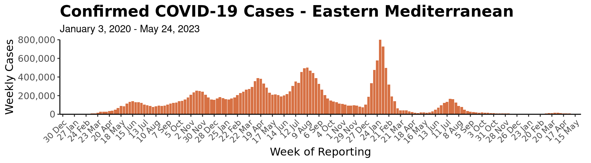
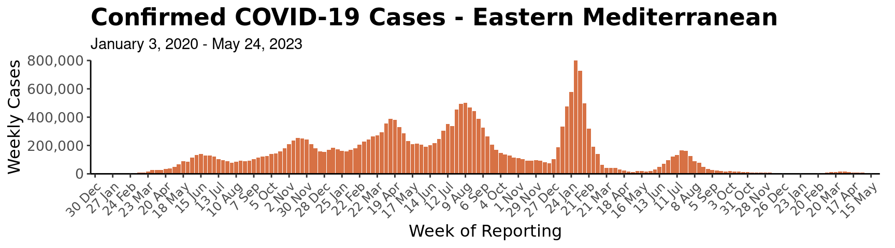

After installing SaviR, you are ready to use the following functions to read in the data and create visualizations. There are functions to create plots, maps, or tables by World Health Organization (WHO) Region, Department of State (DoS) Region, or globally.
Data: The Frankenstein Dataset
onetable - stored metadata with iso2 and iso3 codes, country names, WHO/DoS/World Bank regions, and UN population estimatesget_covid_df() - COVID dataframe from WHO and appended with select Johns Hopkins University (JHU) observationscalc_add_risk() - Add risk matrix calculations to dataframe (df)get_vax() - Get vaccination data from Our World In Data (OWID)get_combined_table(type=c("WHO", "Both"), geometry=FALSE) - Combine all of the above into one large df, optionally add geometry
This snippet produces the master df with all the variables required for all of the following graphics.
# Load in data to create visuals
df_who <- get_combined_table("WHO") # China includes Taiwan, Hong Kong, and Macau data
df_both <- get_combined_table("Both") # China, Taiwan, Hong Kong, and Macau data disaggregated
# Data for visuals are typically as of Sunday of the current week
sunday_date <- lubridate::floor_date(Sys.Date(), "week", week_start = 7)Plots
plot_epicurve(df, transparent = T)
When creating epi curves for the WHO regions, the “plot_epicurve” function should take in the df with only “WHO” observations in order to match the same curve on the WHO Coronavirus Dashboard. The individual epi curves for each region can be run simply by filtering for one WHO region in the df. The function will detect that the region column has only one region and will produce the epi curve accordingly.
When creating epi curves for the DoS regions, the plot_epicurve function should take in the df with “Both” observations. Similarly to the WHO epi curves, individual epi curves can also be produce by filtering to one DoS region.
# Epi Curves for WHO -- Global
epi_curve_global <- plot_epicurve(df_who, transparent = T)
epi_curve_global
plot_epicurve(df_who, transparent = F)
# Epi Curves for DoS -- Global
state_epi_curve <- plot_epicurve(filter(df_both, date <= sunday_date),
type = "cases",
by_cat = "State Region")
state_epi_curve
# Regions
for (r in unique(na.omit(df_who$who_region))) {
epi_curve_regional <- plot_epicurve(filter(df_who, who_region == r), transparent = F)
print(epi_curve_regional)
} 



# epi_curve_regional <- plot_epicurve(filter(df_who, who_region == 'AMRO'), transparent = F) ##change who_region to region of interest.
# print(epi_curve_regional)plot_riskmatrix(df)
Note for labeling purposes, the labels variable should be added to the dataframe specifying the top 10 countries for weekly average incidence, week case percent change, and weekly total cases. Exclusion criteria: Countries with population less than 10 million and countries with weekly cases totals less than 100.
global_risk_matrix <- df_both %>%
filter(date == sunday_date) %>%
filter(population >= 10000000) %>% # Exclude population less than 10M
filter(week_case >= 100) %>%
mutate(
rank_inc = dense_rank(desc(week_case_incidence)),
rank_per = dense_rank(desc(percent_change_case)),
rank_cas = dense_rank(desc(week_case))
) %>%
mutate(labels = case_when(
rank_inc %in% 1:10 ~ country,
rank_per %in% 1:10 ~ country,
rank_cas %in% 1:10 ~ country
)) %>%
plot_riskmatrix()
global_risk_matrix

Maps
By default, get_combined_table() does not return geometry. This is preferable, since the size of the table is quite large and the geometry list column takes up a lot of space in memory. However, if we want to map these data, we can either call get_combined_table("Both", geometry = TRUE), or join with country_coords after filtering, like so:
# Filter to only observations with date as of Sunday
# and join in geometry
df_both_mapping <- df_both %>%
filter(date == sunday_date) %>%
left_join(select(country_coords, id, geometry), by = "id")map_burden(df)
The “map_burden” function requires a result column where weekly average incidence is converted into factors using “cut”. The df normally used is WHO appended with JHU and filtered for the report date. The region maps can also be produced by simply filtering the input df for the specific region. Again the function will detect the number of regions provided and will act accordingly.
burden_map_global <- df_both_mapping %>%
mutate(result = cut(week_case_incidence, breaks = c(-0.1, 1, 10, 25, Inf))) %>%
map_burden()
burden_map_global
for (r in unique(na.omit(df_both$who_region))) {
burden_map_regional <- df_both_mapping %>%
filter(who_region == r) %>%
mutate(result = cut(week_case_incidence, breaks = c(-0.1, 1, 10, 25, Inf))) %>%
map_burden()
print(burden_map_regional)
}


map_trend(df)
The “map_trend” function requires a result column where weekly percent change is converted into factors using “cut”. The df normally used is WHO appended with JHU and filtered for the report date. The region maps can also be produced by simply filtering the input df for the specific region. Again the function will detect the number of regions provided and will act accordingly.
trend_map_global <- df_both_mapping %>%
mutate(result = cut(percent_change_case, breaks = c(-Inf, -50, 0, 50, 100, 200, Inf))) %>%
map_trend()
trend_map_global
for (r in unique(na.omit(df_both_mapping$who_region))) {
trend_map_reg <- df_both_mapping %>%
filter(who_region == r) %>%
mutate(result = cut(percent_change_case, breaks = c(-Inf, -50, 0, 50, 100, 200, Inf))) %>%
map_trend()
print(trend_map_reg)
}


map_vaccinations(df, vac_type = c("People", "Fully"))
global_vax_map <- df_both_mapping %>%
mutate(result = cut(people_vaccinated_per_hundred, breaks = c(0, 1, 3, 10, 30, Inf))) %>%
group_by(country) %>%
filter(!is.na(result)) %>%
filter(date == max(date)) %>%
ungroup() %>%
map_vaccinations(., vac_type = "People")
global_vax_map
Tables
df_both %>%
filter(date == sunday_date) %>%
select(country = who_country, value1 = week_case, value2 = percent_change_case) %>%
arrange(desc(value1)) %>%
head(10) %>%
table_10mostcases(run_date = format(sunday_date, "%B %d, %Y"))| 10 Countries/ Areas with Most New Cases | ||
|---|---|---|
| Country/ Area | New Cases This Week |
% Change Last Week1 |
| France | 612,705 | 35.3 |
| Germany | 555,331 | −2.3 |
| Italy | 511,037 | 50.3 |
| United States of America | 496,049 | −29.3 |
| Brazil | 259,713 | −25.8 |
| Taiwan | 257,183 | −19.2 |
| Australia | 210,389 | 7.1 |
| Spain | 136,364 | 15.2 |
| Japan | 136,357 | 24.5 |
| India | 112,456 | 20.6 |
| Data Source: WHO Coronavirus Disease (COVID-19) Dashboard | ||
| Data as of July 03, 2022 | ||
| 1 Percent change in cases of most recent 7 days to 7 days prior | ||
for (r in unique(na.omit(df_both$who_region))) {
tab_out <- df_both %>%
filter(date == sunday_date) %>%
filter(who_region == r) %>%
select(country = who_country, value1 = week_case, value2 = percent_change_case) %>%
arrange(desc(value1)) %>%
head(10) %>%
table_10mostcases(., type = r, run_date = format(sunday_date, "%B %d, %Y"))
print(htmltools::tagList(tab_out))
}| 10 (AMRO) Countries/ Areas with Most New Cases | ||
|---|---|---|
| Country/ Area |
New Cases This Week |
% Change Last Week1 |
| United States of America | 496,049 | −29.3 |
| Brazil | 259,713 | −25.8 |
| Chile | 42,681 | −34.9 |
| Mexico | 25,602 | −66.5 |
| Puerto Rico | 14,281 | −43.2 |
| Peru | 13,968 | −5.3 |
| Guatemala | 12,571 | −14.3 |
| Panama | 7,392 | −38.5 |
| Ecuador | 5,486 | −31.5 |
| Bolivia | 5,359 | −2.3 |
| Data Source: WHO Coronavirus Disease (COVID-19) Dashboard | ||
| Data as of July 03, 2022 | ||
| 1 Percent change in cases of most recent 7 days to 7 days prior | ||
| 10 (EMRO) Countries/ Areas with Most New Cases | ||
|---|---|---|
| Country/ Area |
New Cases This Week |
% Change Last Week1 |
| Morocco | 21,124 | 19.1 |
| Iraq | 15,791 | 153.2 |
| United Arab Emirates | 12,347 | 10.8 |
| Bahrain | 12,155 | −4.6 |
| Lebanon | 7,212 | 66.3 |
| Tunisia | 5,477 | 140.5 |
| Saudi Arabia | 5,311 | −24.7 |
| Qatar | 4,530 | 4.0 |
| Pakistan | 3,815 | 130.9 |
| Iran | 2,776 | 89.2 |
| Data Source: WHO Coronavirus Disease (COVID-19) Dashboard | ||
| Data as of July 03, 2022 | ||
| 1 Percent change in cases of most recent 7 days to 7 days prior | ||
| 10 (AFRO) Countries/ Areas with Most New Cases | ||
|---|---|---|
| Country/ Area |
New Cases This Week |
% Change Last Week1 |
| South Africa | 2,616 | −61.8 |
| Kenya | 2,283 | −20.1 |
| Angola | 1,559 | - |
| Réunion | 1,500 | 15.3 |
| Cabo Verde | 1,407 | 3.7 |
| Nigeria | 679 | 76.4 |
| Cote d’Ivoire | 638 | 87.6 |
| Mozambique | 495 | 11.5 |
| Ghana | 384 | −68.2 |
| Mauritius | 311 | −78.0 |
| Data Source: WHO Coronavirus Disease (COVID-19) Dashboard | ||
| Data as of July 03, 2022 | ||
| 1 Percent change in cases of most recent 7 days to 7 days prior | ||
| 10 (EURO) Countries/ Areas with Most New Cases | ||
|---|---|---|
| Country/ Area |
New Cases This Week |
% Change Last Week1 |
| France | 612,705 | 35.3 |
| Germany | 555,331 | −2.3 |
| Italy | 511,037 | 50.3 |
| Spain | 136,364 | 15.2 |
| United Kingdom | 109,867 | −14.6 |
| Greece | 100,630 | 47.6 |
| Israel | 74,248 | 9.5 |
| Austria | 69,831 | 19.6 |
| Portugal | 44,445 | −47.3 |
| Netherlands | 32,636 | 3.5 |
| Data Source: WHO Coronavirus Disease (COVID-19) Dashboard | ||
| Data as of July 03, 2022 | ||
| 1 Percent change in cases of most recent 7 days to 7 days prior | ||
| 10 (WPRO) Countries/ Areas with Most New Cases | ||
|---|---|---|
| Country/ Area |
New Cases This Week |
% Change Last Week1 |
| Taiwan | 257,183 | −19.2 |
| Australia | 210,389 | 7.1 |
| Japan | 136,357 | 24.5 |
| Korea (South) | 63,592 | 28.6 |
| Singapore | 57,865 | 49.6 |
| New Zealand | 49,134 | 41.7 |
| Malaysia | 16,694 | 6.1 |
| Hong Kong | 14,293 | 27.7 |
| Philippines | 6,920 | 58.1 |
| Brunei Darussalam | 5,720 | 27.3 |
| Data Source: WHO Coronavirus Disease (COVID-19) Dashboard | ||
| Data as of July 03, 2022 | ||
| 1 Percent change in cases of most recent 7 days to 7 days prior | ||
| 10 (SEARO) Countries/ Areas with Most New Cases | ||
|---|---|---|
| Country/ Area |
New Cases This Week |
% Change Last Week1 |
| India | 112,456 | 20.6 |
| Thailand | 15,950 | 5.6 |
| Bangladesh | 13,516 | 52.8 |
| Indonesia | 13,466 | 8.8 |
| Nepal | 268 | 56.7 |
| Burma | 92 | 39.4 |
| Sri Lanka | 87 | 4.8 |
| Bhutan | 55 | 83.3 |
| Timor-Leste | 8 | 14.3 |
| Maldives | 0 | −100.0 |
| Data Source: WHO Coronavirus Disease (COVID-19) Dashboard | ||
| Data as of July 03, 2022 | ||
| 1 Percent change in cases of most recent 7 days to 7 days prior | ||
df_both %>%
filter(date == sunday_date) %>%
select(country = who_country, value1 = week_case_incidence, value2 = percent_change_case) %>%
arrange(desc(value1)) %>%
head(10) %>%
table_10incidence(., run_date = format(sunday_date, "%B %d, %Y"))| 10 Countries/ Areas with Highest Incidence | ||
|---|---|---|
| Country/ Area | Incidence Per 100,0001 |
% Change Last Week2 |
| Nauru | 2,424.1 | −12.2 |
| Isle of Man | 441.9 | - |
| San Marino | 191.5 | 63.4 |
| Brunei Darussalam | 185.1 | 27.3 |
| Taiwan | 154.0 | −19.2 |
| New Zealand | 144.4 | 41.7 |
| Singapore | 140.2 | 49.6 |
| Greece | 138.6 | 47.6 |
| France | 133.8 | 35.3 |
| Jersey | 132.5 | −12.3 |
| Data Source: WHO Coronavirus Disease (COVID-19) Dashboard | ||
| Data as of July 03, 2022 | ||
| 1 Average daily incidence per 100,000 in past 7 days | ||
| 2 Percent change in cases of most recent 7 days to 7 days prior | ||
for (r in unique(na.omit(df_both$who_region))) {
tab_out <- df_both %>%
filter(date == sunday_date) %>%
filter(who_region == r) %>%
select(country = who_country, value1 = week_case_incidence, value2 = percent_change_case) %>%
arrange(desc(value1)) %>%
head(10) %>%
table_10incidence(., type = r, run_date = format(sunday_date, "%B %d, %Y"))
print(htmltools::tagList(tab_out))
}| 10 (AMRO) Countries/ Areas with Highest Incidence | ||
|---|---|---|
| Country/ Area |
Incidence Per 100,0001 |
% Change Last Week2 |
| Puerto Rico | 72.1 | −43.2 |
| Aruba | 71.8 | −35.8 |
| Bermuda | 47.2 | 5.1 |
| Bonaire, Sint Eustatius, and Saba | 45.9 | 19.7 |
| Anguilla | 42.5 | 21.6 |
| Falkland Islands | 32.4 | −84.3 |
| Chile | 31.7 | −34.9 |
| Saint Kitts and Nevis | 31.5 | 218.9 |
| Barbados | 28.4 | −28.1 |
| Belize | 26.7 | −32.3 |
| Data Source: WHO Coronavirus Disease (COVID-19) Dashboard | ||
| Data as of July 03, 2022 | ||
| 1 Average daily incidence per 100,000 in past 7 days | ||
| 2 Percent change in cases of most recent 7 days to 7 days prior | ||
| 10 (EMRO) Countries/ Areas with Highest Incidence | ||
|---|---|---|
| Country/ Area |
Incidence Per 100,0001 |
% Change Last Week2 |
| Bahrain | 99.3 | −4.6 |
| Qatar | 22.1 | 4.0 |
| United Arab Emirates | 17.7 | 10.8 |
| Lebanon | 15.2 | 66.3 |
| Kuwait | 8.1 | −24.7 |
| Morocco | 8.1 | 19.1 |
| Tunisia | 6.6 | 140.5 |
| Iraq | 5.5 | 153.2 |
| Palestinian Territory | 3.7 | 235.0 |
| Saudi Arabia | 2.1 | −24.7 |
| Data Source: WHO Coronavirus Disease (COVID-19) Dashboard | ||
| Data as of July 03, 2022 | ||
| 1 Average daily incidence per 100,000 in past 7 days | ||
| 2 Percent change in cases of most recent 7 days to 7 days prior | ||
| 10 (AFRO) Countries/ Areas with Highest Incidence | ||
|---|---|---|
| Country/ Area |
Incidence Per 100,0001 |
% Change Last Week2 |
| Cabo Verde | 35.8 | 3.7 |
| Réunion | 23.8 | 15.3 |
| Seychelles | 17.0 | −35.9 |
| Mayotte | 4.1 | 42.1 |
| Mauritius | 3.5 | −78.0 |
| Sao Tome and Principe | 1.3 | 53.8 |
| Equatorial Guinea | 0.9 | 109.1 |
| Gabon | 0.7 | 40.2 |
| Angola | 0.7 | - |
| South Africa | 0.6 | −61.8 |
| Data Source: WHO Coronavirus Disease (COVID-19) Dashboard | ||
| Data as of July 03, 2022 | ||
| 1 Average daily incidence per 100,000 in past 7 days | ||
| 2 Percent change in cases of most recent 7 days to 7 days prior | ||
| 10 (EURO) Countries/ Areas with Highest Incidence | ||
|---|---|---|
| Country/ Area |
Incidence Per 100,0001 |
% Change Last Week2 |
| Isle of Man | 441.9 | - |
| San Marino | 191.5 | 63.4 |
| Greece | 138.6 | 47.6 |
| France | 133.8 | 35.3 |
| Jersey | 132.5 | −12.3 |
| Cyprus | 127.9 | 49.8 |
| Gibraltar | 125.5 | - |
| Malta | 123.4 | 25.9 |
| Italy | 120.9 | 50.3 |
| Israel | 120.7 | 9.5 |
| Data Source: WHO Coronavirus Disease (COVID-19) Dashboard | ||
| Data as of July 03, 2022 | ||
| 1 Average daily incidence per 100,000 in past 7 days | ||
| 2 Percent change in cases of most recent 7 days to 7 days prior | ||
| 10 (WPRO) Countries/ Areas with Highest Incidence | ||
|---|---|---|
| Country/ Area |
Incidence Per 100,0001 |
% Change Last Week2 |
| Nauru | 2,424.1 | −12.2 |
| Brunei Darussalam | 185.1 | 27.3 |
| Taiwan | 154.0 | −19.2 |
| New Zealand | 144.4 | 41.7 |
| Singapore | 140.2 | 49.6 |
| Australia | 116.5 | 7.1 |
| Niue | 88.5 | - |
| Guam | 55.1 | 28.6 |
| Northern Mariana Islands | 46.9 | 118.4 |
| New Caledonia | 40.7 | 60.2 |
| Data Source: WHO Coronavirus Disease (COVID-19) Dashboard | ||
| Data as of July 03, 2022 | ||
| 1 Average daily incidence per 100,000 in past 7 days | ||
| 2 Percent change in cases of most recent 7 days to 7 days prior | ||
| 10 (SEARO) Countries/ Areas with Highest Incidence | ||
|---|---|---|
| Country/ Area |
Incidence Per 100,0001 |
% Change Last Week2 |
| Thailand | 3.3 | 5.6 |
| Bangladesh | 1.2 | 52.8 |
| India | 1.2 | 20.6 |
| Bhutan | 1.0 | 83.3 |
| Indonesia | 0.7 | 8.8 |
| Nepal | 0.1 | 56.7 |
| Timor-Leste | 0.1 | 14.3 |
| Sri Lanka | 0.1 | 4.8 |
| Burma | 0.0 | 39.4 |
| Maldives | 0.0 | −100.0 |
| Data Source: WHO Coronavirus Disease (COVID-19) Dashboard | ||
| Data as of July 03, 2022 | ||
| 1 Average daily incidence per 100,000 in past 7 days | ||
| 2 Percent change in cases of most recent 7 days to 7 days prior | ||
df_both %>%
filter(date == sunday_date) %>%
filter(population >= 10000000) %>% # Exclude population less than 10M
select(country = who_country, value1 = percent_change_case, value2 = percent_change4_case) %>%
arrange(desc(value1)) %>%
head(10) %>%
table_10percentchange(., run_date = format(sunday_date, "%B %d, %Y"))| 10 Countries/ Areas with Highest Percent Change Last Week |
||
|---|---|---|
| Country/ Area | % Change Last Week1 |
% Change 4 Weeks2 |
| Haiti | 302.7 | 108.3 |
| Kazakhstan | 220.7 | 1,270.0 |
| Iraq | 153.2 | 2,019.6 |
| Turkey | 143.2 | 869.6 |
| Tunisia | 140.5 | 973.9 |
| Pakistan | 130.9 | 819.3 |
| Iran | 89.2 | 115.0 |
| Cote d'Ivoire | 87.6 | 557.7 |
| Poland | 81.3 | 128.8 |
| Nigeria | 76.4 | 465.8 |
| Note: Countries with population size less than 10 million were excluded | ||
| Data Source: WHO Coronavirus Disease (COVID-19) Dashboard | ||
| Data as of July 03, 2022 | ||
| 1 Percent change in cases of most recent 7 days to 7 days prior | ||
| 2 Percent change in cases of most recent 7 days to 4 weeks prior | ||
for (r in unique(na.omit(df_both$who_region))) {
tab_out <- df_both %>%
filter(date == sunday_date) %>%
filter(population >= 100000) %>% # Exclude population less than 100,000
filter(who_region == r) %>%
select(country = who_country, value1 = percent_change_case, value2 = percent_change4_case) %>%
arrange(desc(value1)) %>%
head(10) %>%
table_10percentchange(type = r, run_date = format(sunday_date, "%B %d, %Y"))
print(htmltools::tagList(tab_out))
}|
10 (AMRO) Countries/ Areas with Highest Percent Change Last Week |
||
|---|---|---|
| Country/ Area |
% Change Last Week1 |
% Change 4 Weeks2 |
| Haiti | 302.7 | 108.3 |
| Bolivia | −2.3 | 328.7 |
| Peru | −5.3 | 177.2 |
| Suriname | −7.8 | −64.1 |
| Guatemala | −14.3 | 193.4 |
| Curaçao | −16.7 | −68.3 |
| Dominican Republic | −21.4 | 51.6 |
| Bahamas | −23.7 | −58.1 |
| Jamaica | −23.9 | −70.0 |
| Cuba | −24.0 | −41.2 |
| Note: Countries with population size less than 100,000 were excluded | ||
| Data Source: WHO Coronavirus Disease (COVID-19) Dashboard | ||
| Data as of July 03, 2022 | ||
| 1 Percent change in cases of most recent 7 days to 7 days prior | ||
| 2 Percent change in cases of most recent 7 days to 4 weeks prior | ||
|
10 (EMRO) Countries/ Areas with Highest Percent Change Last Week |
||
|---|---|---|
| Country/ Area |
% Change Last Week1 |
% Change 4 Weeks2 |
| Palestinian Territory | 235.0 | 922.7 |
| Iraq | 153.2 | 2,019.6 |
| Tunisia | 140.5 | 973.9 |
| Pakistan | 130.9 | 819.3 |
| Iran | 89.2 | 115.0 |
| Lebanon | 66.3 | 960.6 |
| Jordan | 37.0 | 227.5 |
| Syria | 28.6 | 28.6 |
| Morocco | 19.1 | 865.4 |
| Afghanistan | 14.7 | 15.4 |
| Note: Countries with population size less than 100,000 were excluded | ||
| Data Source: WHO Coronavirus Disease (COVID-19) Dashboard | ||
| Data as of July 03, 2022 | ||
| 1 Percent change in cases of most recent 7 days to 7 days prior | ||
| 2 Percent change in cases of most recent 7 days to 4 weeks prior | ||
|
10 (AFRO) Countries/ Areas with Highest Percent Change Last Week |
||
|---|---|---|
| Country/ Area |
% Change Last Week1 |
% Change 4 Weeks2 |
| Comoros | 112.5 | 183.3 |
| Equatorial Guinea | 109.1 | 2,966.7 |
| Cote d’Ivoire | 87.6 | 557.7 |
| Nigeria | 76.4 | 465.8 |
| Sao Tome and Principe | 53.8 | 122.2 |
| Algeria | 44.1 | 269.6 |
| Mayotte | 42.1 | −39.6 |
| Gabon | 40.2 | 325.9 |
| Togo | 16.0 | 100.0 |
| Rwanda | 16.0 | 121.6 |
| Note: Countries with population size less than 100,000 were excluded | ||
| Data Source: WHO Coronavirus Disease (COVID-19) Dashboard | ||
| Data as of July 03, 2022 | ||
| 1 Percent change in cases of most recent 7 days to 7 days prior | ||
| 2 Percent change in cases of most recent 7 days to 4 weeks prior | ||
|
10 (EURO) Countries/ Areas with Highest Percent Change Last Week |
||
|---|---|---|
| Country/ Area |
% Change Last Week1 |
% Change 4 Weeks2 |
| Kosovo | 326.6 | 1,786.7 |
| Kyrgyzstan | 314.3 | - |
| Kazakhstan | 220.7 | 1,270.0 |
| Turkey | 143.2 | 869.6 |
| Armenia | 131.7 | 4,533.3 |
| Albania | 119.8 | 1,173.0 |
| Latvia | 116.8 | 221.2 |
| Moldova | 85.3 | 1,267.6 |
| Poland | 81.3 | 128.8 |
| North Macedonia | 76.8 | 86.8 |
| Note: Countries with population size less than 100,000 were excluded | ||
| Data Source: WHO Coronavirus Disease (COVID-19) Dashboard | ||
| Data as of July 03, 2022 | ||
| 1 Percent change in cases of most recent 7 days to 7 days prior | ||
| 2 Percent change in cases of most recent 7 days to 4 weeks prior | ||
|
10 (WPRO) Countries/ Areas with Highest Percent Change Last Week |
||
|---|---|---|
| Country/ Area |
% Change Last Week1 |
% Change 4 Weeks2 |
| Macau | 565.8 | - |
| China | 64.2 | 33.4 |
| New Caledonia | 60.2 | 156.1 |
| Philippines | 58.1 | 443.6 |
| Singapore | 49.6 | 147.7 |
| New Zealand | 41.7 | 3.7 |
| Laos | 36.0 | −42.9 |
| Guam | 28.6 | 420.6 |
| Korea (South) | 28.6 | −23.7 |
| Hong Kong | 27.7 | 367.4 |
| Note: Countries with population size less than 100,000 were excluded | ||
| Data Source: WHO Coronavirus Disease (COVID-19) Dashboard | ||
| Data as of July 03, 2022 | ||
| 1 Percent change in cases of most recent 7 days to 7 days prior | ||
| 2 Percent change in cases of most recent 7 days to 4 weeks prior | ||
|
10 (SEARO) Countries/ Areas with Highest Percent Change Last Week |
||
|---|---|---|
| Country/ Area |
% Change Last Week1 |
% Change 4 Weeks2 |
| Bhutan | 83.3 | 292.9 |
| Nepal | 56.7 | 272.2 |
| Bangladesh | 52.8 | 6,157.4 |
| Burma | 39.4 | 37.3 |
| India | 20.6 | 373.0 |
| Timor-Leste | 14.3 | −38.5 |
| Indonesia | 8.8 | 464.6 |
| Thailand | 5.6 | −33.9 |
| Sri Lanka | 4.8 | 64.2 |
| Maldives | −100.0 | −100.0 |
| Note: Countries with population size less than 100,000 were excluded | ||
| Data Source: WHO Coronavirus Disease (COVID-19) Dashboard | ||
| Data as of July 03, 2022 | ||
| 1 Percent change in cases of most recent 7 days to 7 days prior | ||
| 2 Percent change in cases of most recent 7 days to 4 weeks prior | ||
table_10vaccinations(df, type = c("Global", "Region"), run_date)
The “table_10vaccinations” function takes looks for a country, value1 (people vaccinated per hundred), and a value2 (daily vaccinations per hundred) column. Note as vaccination reporting has gaps, the df must be sliced by country and the most recent date with people_vaccinated_per_hundred value (if there is one).
df_both %>%
filter(date <= sunday_date) %>%
filter(population > 1000000) %>%
group_by(country) %>%
filter(!is.na(people_vaccinated_per_hundred)) %>%
filter(date == max(date)) %>%
ungroup() %>%
select(country = who_country, value1 = people_vaccinated_per_hundred, value2 = daily_vaccinations_per_hundred) %>%
arrange(desc(value1)) %>%
head(10) %>%
table_10vaccinations(., run_date = format(sunday_date, "%B %d, %Y"))|
Top 10 Countries/ Areas with Highest Vaccination per 100 People1,2 |
||
|---|---|---|
| Country/ Area | People Vaccinated per 100 People3 |
Daily Vaccines Administered per 100 People4 |
| United Arab Emirates | 100.0 | NA |
| Portugal | 95.7 | NA |
| Cuba | 94.4 | NA |
| Chile | 93.7 | 0.28 |
| Singapore | 92.0 | NA |
| Qatar | 90.3 | NA |
| Argentina | 90.3 | 0.14 |
| China | 89.6 | NA |
| Hong Kong | 89.3 | 0.16 |
| Cambodia | 89.0 | NA |
| Data as of July 03, 2022 | ||
| 1 Countries with population size less than or equal to 1 million were excluded | ||
| 2 People vaccinated per 100 people represents total population (all ages) | ||
| 3 Number of people out of 100 who received at least one vaccine dose; does not represent percent of population that completed primary vaccination series | ||
| 4 Vaccine doses administered per day (7 day rolling average); does not represent number of people vaccinated | ||
for (r in unique(na.omit(df_both$who_region))) {
tab_out <- df_both %>%
filter(date <= sunday_date) %>%
filter(population > 100000) %>% # Exclude population less than 100,000
filter(who_region == r) %>%
group_by(country) %>%
filter(!is.na(people_vaccinated_per_hundred)) %>%
arrange(date) %>%
top_n(1, date) %>%
distinct(id, .keep_all = T) %>%
select(country = who_country, value1 = people_vaccinated_per_hundred, value2 = daily_vaccinations_per_hundred) %>%
arrange(desc(value1)) %>%
head(10) %>%
table_10vaccinations(., type = r, run_date = format(sunday_date, "%B %d, %Y"))
print(htmltools::tagList(tab_out))
}|
10 (AMRO) Countries/ Areas with Highest Vaccination per 100 People1,2 |
||
|---|---|---|
| Country/ Area |
People Vaccinated per 100 People3 |
Daily Vaccines Administered per 100 People4 |
| Cuba | 94.4 | NA |
| Chile | 93.7 | 0.28 |
| Argentina | 90.3 | 0.14 |
| Nicaragua | 88.6 | NA |
| Peru | 88.5 | NA |
| Costa Rica | 86.3 | NA |
| Brazil | 86.3 | 0.29 |
| Canada | 86.1 | NA |
| Uruguay | 86.0 | 0.16 |
| Ecuador | 84.9 | NA |
| Data as of July 03, 2022 | ||
| 1 Countries with population size less than or equal to 100,000 were excluded | ||
| 2 People vaccinated per 100 people represents total population (all ages) | ||
| 3 Number of people out of 100 who received at least one vaccine dose; does not represent percent of population that completed primary vaccination series | ||
| 4 Vaccine doses administered per day (7 day rolling average); does not represent number of people vaccinated | ||
|
10 (EMRO) Countries/ Areas with Highest Vaccination per 100 People1,2 |
||
|---|---|---|
| Country/ Area |
People Vaccinated per 100 People3 |
Daily Vaccines Administered per 100 People4 |
| United Arab Emirates | 100.0 | NA |
| Qatar | 90.3 | NA |
| Kuwait | 79.3 | NA |
| Iran | 75.9 | NA |
| Saudi Arabia | 75.6 | NA |
| Bahrain | 70.8 | 0.02 |
| Morocco | 66.8 | NA |
| Oman | 62.5 | NA |
| Pakistan | 61.0 | 0.40 |
| Tunisia | 60.6 | NA |
| Data as of July 03, 2022 | ||
| 1 Countries with population size less than or equal to 100,000 were excluded | ||
| 2 People vaccinated per 100 people represents total population (all ages) | ||
| 3 Number of people out of 100 who received at least one vaccine dose; does not represent percent of population that completed primary vaccination series | ||
| 4 Vaccine doses administered per day (7 day rolling average); does not represent number of people vaccinated | ||
|
10 (AFRO) Countries/ Areas with Highest Vaccination per 100 People1,2 |
||
|---|---|---|
| Country/ Area |
People Vaccinated per 100 People3 |
Daily Vaccines Administered per 100 People4 |
| Mauritius | 76.8 | NA |
| Botswana | 70.8 | NA |
| Rwanda | 68.6 | NA |
| Cabo Verde | 63.2 | NA |
| Sao Tome and Principe | 55.8 | NA |
| Liberia | 47.5 | NA |
| Mozambique | 46.6 | NA |
| Lesotho | 43.2 | NA |
| Zimbabwe | 41.9 | 0.06 |
| Mauritania | 40.4 | NA |
| Data as of July 03, 2022 | ||
| 1 Countries with population size less than or equal to 100,000 were excluded | ||
| 2 People vaccinated per 100 people represents total population (all ages) | ||
| 3 Number of people out of 100 who received at least one vaccine dose; does not represent percent of population that completed primary vaccination series | ||
| 4 Vaccine doses administered per day (7 day rolling average); does not represent number of people vaccinated | ||
|
10 (EURO) Countries/ Areas with Highest Vaccination per 100 People1,2 |
||
|---|---|---|
| Country/ Area |
People Vaccinated per 100 People3 |
Daily Vaccines Administered per 100 People4 |
| Portugal | 95.7 | NA |
| Malta | 92.4 | 0.05 |
| Spain | 88.3 | NA |
| Italy | 84.2 | 0.02 |
| Iceland | 84.0 | NA |
| Denmark | 83.1 | 0.01 |
| Jersey | 82.7 | NA |
| Ireland | 82.1 | NA |
| Finland | 81.4 | NA |
| France | 80.8 | 0.12 |
| Data as of July 03, 2022 | ||
| 1 Countries with population size less than or equal to 100,000 were excluded | ||
| 2 People vaccinated per 100 people represents total population (all ages) | ||
| 3 Number of people out of 100 who received at least one vaccine dose; does not represent percent of population that completed primary vaccination series | ||
| 4 Vaccine doses administered per day (7 day rolling average); does not represent number of people vaccinated | ||
|
10 (WPRO) Countries/ Areas with Highest Vaccination per 100 People1,2 |
||
|---|---|---|
| Country/ Area |
People Vaccinated per 100 People3 |
Daily Vaccines Administered per 100 People4 |
| Samoa | 114.6 | NA |
| Tonga | 101.4 | NA |
| Brunei Darussalam | 100.6 | NA |
| Macau | 93.2 | 0.06 |
| Singapore | 92.0 | NA |
| China | 89.6 | NA |
| Hong Kong | 89.3 | 0.16 |
| Cambodia | 89.0 | NA |
| Taiwan | 88.8 | 0.35 |
| Viet Nam | 88.1 | 0.54 |
| Data as of July 03, 2022 | ||
| 1 Countries with population size less than or equal to 100,000 were excluded | ||
| 2 People vaccinated per 100 people represents total population (all ages) | ||
| 3 Number of people out of 100 who received at least one vaccine dose; does not represent percent of population that completed primary vaccination series | ||
| 4 Vaccine doses administered per day (7 day rolling average); does not represent number of people vaccinated | ||
|
10 (SEARO) Countries/ Areas with Highest Vaccination per 100 People1,2 |
||
|---|---|---|
| Country/ Area |
People Vaccinated per 100 People3 |
Daily Vaccines Administered per 100 People4 |
| Bhutan | 88.8 | NA |
| Thailand | 81.1 | 0.08 |
| Sri Lanka | 79.4 | NA |
| Nepal | 78.7 | 0.43 |
| Bangladesh | 78.0 | 0.13 |
| Maldives | 73.3 | NA |
| India | 73.0 | 0.09 |
| Indonesia | 72.7 | NA |
| Timor-Leste | 61.2 | NA |
| Burma | 60.2 | NA |
| Data as of July 03, 2022 | ||
| 1 Countries with population size less than or equal to 100,000 were excluded | ||
| 2 People vaccinated per 100 people represents total population (all ages) | ||
| 3 Number of people out of 100 who received at least one vaccine dose; does not represent percent of population that completed primary vaccination series | ||
| 4 Vaccine doses administered per day (7 day rolling average); does not represent number of people vaccinated | ||
table_10vaccinations(df, vac_type = c("Partial", "Fully"), type = "Global", run_date = "Enter a date")
df_both %>%
filter(date <= sunday_date) %>%
filter(population > 1000000) %>%
group_by(country) %>%
filter(!is.na(people_fully_vaccinated_per_hundred)) %>%
filter(date == max(date)) %>%
ungroup() %>%
select(country = who_country, value1 = people_fully_vaccinated_per_hundred, value2 = daily_vaccinations_per_hundred) %>%
arrange(desc(value1)) %>%
head(10) %>%
table_10vaccinations(., run_date = format(sunday_date, "%B %d, %Y"))|
Top 10 Countries/ Areas with Highest Vaccination per 100 People1,2 |
||
|---|---|---|
| Country/ Area | People Vaccinated per 100 People3 |
Daily Vaccines Administered per 100 People4 |
| United Arab Emirates | 98.0 | NA |
| Singapore | 91.6 | NA |
| Chile | 91.5 | 0.28 |
| Qatar | 90.3 | NA |
| Cuba | 88.1 | NA |
| Portugal | 87.4 | NA |
| China | 87.3 | NA |
| Korea (South) | 87.0 | 0.02 |
| Spain | 86.8 | NA |
| Hong Kong | 85.5 | 0.16 |
| Data as of July 03, 2022 | ||
| 1 Countries with population size less than or equal to 1 million were excluded | ||
| 2 People vaccinated per 100 people represents total population (all ages) | ||
| 3 Number of people out of 100 who received at least one vaccine dose; does not represent percent of population that completed primary vaccination series | ||
| 4 Vaccine doses administered per day (7 day rolling average); does not represent number of people vaccinated | ||
table_countriesofconcern(df, df_vaccinations_manufacturers, country_list)
c_list <- c("United Kingdom","Denmark","Portugal","South Africa","Kenya","Zambia","United States of America")
c_list_iso <- parse_country(c_list, to = "iso3c")
df_both_latest <- df_both %>%
group_by(id) %>%
filter(date == max(date)) %>%
ungroup()
vax_man <- get_vax_manufacturers()
table_countriesofconcern(df_both_latest, vax_man, c_list_iso)Country |
Denmark |
United Kingdom |
Kenya |
Portugal |
United States of America |
South Africa |
Zambia |
Date |
2022-07-04 |
2022-07-04 |
2022-07-04 |
2022-07-04 |
2022-07-04 |
2022-07-04 |
2022-07-04 |
New Cases 7 Day Average |
1,772.6 |
13,615.4 |
288.9 |
5,682.7 |
66,957.3 |
343.4 |
14.3 |
7 Day Cases |
12,408 |
95,308 |
2,022 |
39,779 |
468,701 |
2,404 |
100 |
Previous 7 Day Cases |
7,317 |
129,649 |
2,874 |
78,037 |
694,170 |
6,060 |
960 |
% Change in Cases from Previous 7 Days |
69.6% |
-26.5% |
-29.6% |
-49% |
-32.5% |
-60.3% |
-89.6% |
New Deaths 7 Day Average |
4.7 |
34.4 |
0.4 |
12 |
215.4 |
10.1 |
0 |
7 Day Deaths |
33 |
241 |
3 |
84 |
1,508 |
71 |
0 |
Previous 7 Day Deaths |
9 |
419 |
1 |
159 |
2,048 |
136 |
9 |
% Change in Deaths from Previous 7 Days |
266.67% |
-42.48% |
200% |
-47.17% |
-26.37% |
-47.79% |
-100% |
Most Recent Date for Vaccinations |
2022-07-03 |
2022-06-22 |
2022-06-19 |
2022-06-24 |
2022-06-28 |
2022-07-04 |
2022-06-30 |
People Vaccinated Per 100 People |
83.09 |
78.55 |
22.99 |
95.68 |
78.30 |
36.71 |
17.13 |
People who completed primary |
82.46 |
73.49 |
16.96 |
87.38 |
66.95 |
31.77 |
23.93 |
Total Vaccinations Per 100 People |
227.54 |
219.03 |
33.71 |
242.10 |
179.58 |
61.39 |
38.05 |
Vaccines in Use |
Johnson&Johnson, Moderna, Pfizer/BioNTech |
Moderna, Oxford/AstraZeneca, Pfizer/BioNTech |
Johnson&Johnson, Moderna, Oxford/AstraZeneca, Pfizer/BioNTech, Sinopharm/Beijing |
Covaxin, Johnson&Johnson, Moderna, Novavax, Oxford/AstraZeneca, Pfizer/BioNTech, Sinopharm/Beijing, Sinovac |
Johnson&Johnson, Moderna, Pfizer/BioNTech |
Johnson&Johnson, Pfizer/BioNTech |
Johnson&Johnson, Oxford/AstraZeneca, Sinopharm/Beijing |
% Delta since January 1, 2022 |
Fill manually |
Fill manually |
Fill manually |
Fill manually |
Fill manually |
Fill manually |
Fill manually |
% Omicron since January 1, 2022 |
Fill manually |
Fill manually |
Fill manually |
Fill manually |
Fill manually |
Fill manually |
Fill manually |